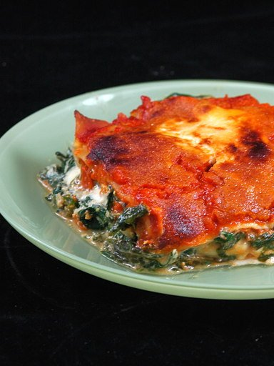

Lasagnes ricotta épinards
Ingredients
4×
- 2 oignons
- 1 grosse boîte de tomates
- 2 gousses d'ail
- herbes de Provence
- sel
- poivre
- sucre
- 500 g d'épinards surgelés
- 250 g de ricotta
- 250 g de mascarpone
- plaques de lasagnes
- parmesan

Préparation
Étape 1
Éplucher et émincer 2 oignons, les rissoler. Ajouter 1 grosse boîte de tomates, 2 gousses d'ail, des herbes de Provence, sel, poivre et une pincée de sucre. Laisser mijoter.
Étape 2
Cuire 500 g d'épinards surgelés et ajouter 250 g de ricotta.
Étape 3
Fouetter 250 g de mascarpone pour pouvoir l’étaler.
Étape 4
Monter les couches : sauce tomate, plaques de lasagnes, épinards-ricotta, mascarpone, lasagnes, épinards-ricotta, lasagnes, sauce tomate et mascarpone. Parsemer de parmesan.
Étape 5
Cuire 20min à 210ºC.